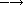

The preceding chapter prepared you to write Scheme programs using a small set of the most useful primitive syntactic forms and procedures. This chapter introduces a number of additional features and programming techniques that will allow you to write more sophisticated and efficient programs.
As we saw in Section 2.5, the let syntactic form is merely a syntactic extension defined in terms of a lambda expression and a procedure application, both core syntactic forms. At this point, you might be wondering which syntactic forms are core forms and which are syntactic extensions, and how new syntactic extensions may be defined. This section provides some answers to these questions.
In truth, it is not necessary for us to draw a distinction between core forms and syntactic extensions, since once defined, a syntactic extension has exactly the same status as a core form. Drawing a distinction, however, makes understanding the language easier, since it allows us to focus attention on the core forms and to understand all others in terms of them.
It is necessary for a Scheme implementation to distinguish between core forms and syntactic extensions. A Scheme implementation expands syntactic extensions into core forms as the first step of compilation or interpretation, allowing the rest of the compiler or interpreter to focus only on the core forms. The set of core forms remaining after expansion to be handled directly by the compiler or interpreter is implementation-dependent, however, and may be different from the set of forms described as core here.
The exact set of syntactic forms making up the core of the language is thus subject to debate, although it must be possible to derive all other forms from any set of forms declared to be core forms. The set described here is among the simplest for which this constraint is satisfied.
The core syntactic forms include top-level define forms, constants, variables, procedure applications, quote expressions, lambda expressions, if expressions, and set! expressions. The grammar below describes the core syntax of Scheme in terms of these definitions and expressions. In the grammar, vertical bars ( | ) separate alternatives, and a form followed by an asterisk ( * ) represents zero or more occurrences of the form. <variable> is any Scheme identifier. <datum> is any Scheme object, such as a number, list, symbol, or vector. <boolean> is either #t or #f, <number> is any number, <character> is any character, and <string> is any string. We have already seen examples of numbers, strings, lists, symbols, and booleans. See Chapter 6 or the formal syntax description starting on page 455 for more on the object-level syntax of these and other objects.
| <program> | "> | <form>* |
| <form> | "> | <definition> | <expression> |
| <definition> | "> | <variable definition> | (begin <definition>*) |
| <variable definition> | "> | (define <variable> <expression>) |
| <expression> | "> | <constant> |
| | | <variable> | |
| | | (quote <datum>) | |
| | | (lambda <formals> <expression> <expression>*) | |
| | | (if <expression> <expression> <expression>) | |
| | | (set! <variable> <expression>) | |
| | | <application> | |
| <constant> | "> | <boolean> | <number> | <character> | <string> |
| <formals> | "> | <variable> |
| | | (<variable>*) | |
| | | (<variable> <variable>* . <variable>) | |
| <application> | "> | (<expression> <expression>*) |
The grammar is ambiguous in that the syntax for procedure applications conflicts with the syntaxes for quote, lambda, if, and set! expressions. In order to qualify as a procedure application, the first <expression> must not be one of these keywords, unless the keyword has been redefined or locally bound.
The "defun" syntax for define given in Section 2.6 is not included in the core, since definitions in that form are straightforwardly translated into the simpler define syntax. Similarly, the core syntax for if does not permit the alternative to be omitted, as did one example in Section 2.9. An if expression lacking an alternative can be translated into the core syntax for if merely by replacing the missing subexpression with an arbitrary constant, such as #f.
A begin that contains only definitions is considered to be a definition in the grammar; this is permitted in order to allow syntactic extensions to expand into more than one definition. begin expressions, i.e., begin forms containing expressions, are not considered core forms. A begin expression of the form
(begin e1 e2 ...)
is equivalent to the lambda application
((lambda () e1 e2 ...))
and hence need not be considered core.
Now that we have established a set of core syntactic forms, let's turn to a discussion of syntactic extensions. Syntactic extensions are so called because they extend the syntax of Scheme beyond the core syntax. All syntactic extensions in a Scheme program must ultimately be derived from the core forms. One syntactic extension, however, may be defined in terms of another syntactic extension, as long as the latter is in some sense "closer" to the core syntax. Syntactic forms may appear anywhere an expression or definition is expected, as long as the extended form expands into a definition or expression as appropriate.
Syntactic extensions are defined with define-syntax. define-syntax is similar to define, except that define-syntax associates a syntactic transformation procedure, or transformer, with a keyword (such as let), rather than associating a value with a variable. Here is how we might define let with define-syntax.
(define-syntax let
(syntax-rules ()
[(_ ((x e) ...) b1 b2 ...)
((lambda (x ...) b1 b2 ...) e ...)]))
The identifier appearing after define-syntax is the name, or keyword, of the syntactic extension being defined, in this case let. The syntax-rules form is an expression that evaluates to a transformer. The item following syntax-rules is a list of auxiliary keywords and is nearly always (). An example of an auxiliary keyword is the else of cond. (Other examples requiring the use of auxiliary keywords are given in Chapter 8.) Following the list of auxiliary keywords is a sequence of one or more rules, or pattern/template pairs. Only one rule appears in our definition of let. The pattern part of a rule specifies the form that the input must take, and the template specifies to what the input should be transformed.
The pattern should always be a structured expression whose first element is an underscore ( _ ). (As we will see in Chapter 8, the use of _ is only a convention, but it is a good one to follow.) If more than one rule is present, the appropriate one is chosen by matching the patterns, in order, against the input during expansion. It is a syntax violation if none of the patterns match the input.
Identifiers other than an underscore or ellipsis appearing within a pattern are pattern variables, unless they are listed as auxiliary keywords. Pattern variables match any substructure and are bound to that substructure within the corresponding template. The notation pat ... in the pattern allows for zero or more expressions matching the ellipsis prototype pat in the input. Similarly, the notation expr ... in the template produces zero or more expressions from the ellipsis prototype expr in the output. The number of pats in the input determines the number of exprs in the output; in order for this to work, any ellipsis prototype in the template must contain at least one pattern variable from an ellipsis prototype in the pattern.
The single rule in our definition of let should be fairly self-explanatory, but a few points are worth mentioning. First, the syntax of let requires that the body contain at least one form; hence, we have specified b1 b2 ... instead of b ..., which might seem more natural. On the other hand, let does not require that there be at least one variable/value pair, so we were able to use, simply, (x e) .... Second, the pattern variables x and e, though together within the same prototype in the pattern, are separated in the template; any sort of rearrangement or recombination is possible. Finally, the three pattern variables x, e, and b2 that appear in ellipsis prototypes in the pattern also appear in ellipsis prototypes in the template. This is not a coincidence; it is a requirement. In general, if a pattern variable appears within an ellipsis prototype in the pattern, it cannot appear outside an ellipsis prototype in the template.
The definition of and below is somewhat more complex than the one for let.
(define-syntax and
(syntax-rules ()
[(_) #t]
[(_ e) e]
[(_ e1 e2 e3 ...)
(if e1 (and e2 e3 ...) #f)]))
This definition is recursive and involves more than one rule. Recall that (and) evaluates to #t; the first rule takes care of this case. The second and third rules specify the base case and recursion steps of the recursion and together translate and expressions with two or more subexpressions into nested if expressions. For example, (and a b c) expands first into
(if a (and b c) #f)
then
(if a (if b (and c) #f) #f)
and finally
(if a (if b c #f) #f)
With this expansion, if a and b evaluate to a true value, then the value is the value of c, otherwise #f, as desired.
The version of and below is simpler but, unfortunately, incorrect.
(define-syntax and ; incorrect!
(syntax-rules ()
[(_) #t]
[(_ e1 e2 ...)
(if e1 (and e2 ...) #f)]))
The expression
(and (not (= x 0)) (/ 1 x))
should return the value of (/ 1 x) when x is not zero. With the incorrect version of and, the expression expands as follows.
(if (not (= x 0)) (and (/ 1 x)) #f) 
(if (not (= x 0)) (if (/ 1 x) (and) #f) #f)
(if (not (= x 0)) (if (/ 1 x) #t #f) #f)
The final answer if x is not zero is #t, not the value of (/ 1 x).
The definition of or below is similar to the one for and except that a temporary variable must be introduced for each intermediate value so that we can both test the value and return it if it is a true value. (A temporary variable is not needed for and since there is only one false value, #f.)
(define-syntax or
(syntax-rules ()
[(_) #f]
[(_ e) e]
[(_ e1 e2 e3 ...)
(let ([t e1])
(if t t (or e2 e3 ...)))]))
Like variables bound by lambda or let, identifiers introduced by a template are lexically scoped, i.e., visible only within expressions introduced by the template. Thus, even if one of the expressions e2 e3 ... contains a reference to t, the introduced binding for t does not "capture" those references. This is typically accomplished via automatic renaming of introduced identifiers.
As with the simpler version of and given above, the simpler version of or below is incorrect.
(define-syntax or ; incorrect!
(syntax-rules ()
[(_) #f]
[(_ e1 e2 ...)
(let ([t e1])
(if t t (or e2 ...)))]))
The reason is more subtle, however, and is the subject of Exercise 3.2.6.
(let ([x (memv 'a ls)])
(and x (memv 'b x)))
into core forms.
(or (memv x '(a b c)) (list x))
into core forms.
(let* ([a 5] [b (+ a a)] [c (+ a b)])
(list a b c))  (5 10 15)
(5 10 15)
let* can be implemented as nested let expressions. For example, the let* expression above is equivalent to the nested let expressions below.
(let ([a 5])
(let ([b (+ a a)])
(let ([c (+ a b)])
(list a b c)))) (5 10 15)
Define let* with define-syntax.
(when test expr1 expr2 ...)
(unless test expr1 expr2 ...)
With both forms, test is evaluated first. For when, if test evaluates to true, the remaining forms are evaluated in sequence as if enclosed in an implicit begin expression. If test evaluates to false, the remaining forms are not evaluated, and the result is unspecified. unless is similar except that the remaining forms are evaluated only if test evaluates to false.
(let ([x 3])
(unless (= x 0) (set! x (+ x 1)))
(when (= x 4) (set! x (* x 2)))
x) 8
Define when as a syntactic extension in terms of if and begin, and define unless in terms of when.
In Section 2.8, we saw how to define recursive procedures using top-level definitions. Before that, we saw how to create local bindings for procedures using let. It is natural to wonder whether a let-bound procedure can be recursive. The answer is no, at least not in a straightforward way. If you try to evaluate the expression
(let ([sum (lambda (ls)
(if (null? ls)
0
(+ (car ls) (sum (cdr ls)))))])
(sum '(1 2 3 4 5)))
it will probably raise an exception with a message to the effect that sum is undefined. This is because the variable sum is visible only within the body of the let expression and not within the lambda expression whose value is bound to sum. We can get around this problem by passing the procedure sum to itself as follows.
(let ([sum (lambda (sum ls)
(if (null? ls)
0
(+ (car ls) (sum sum (cdr ls)))))])
(sum sum '(1 2 3 4 5))) 15
This works and is a clever solution, but there is an easier way, using letrec. Like let, the letrec syntactic form includes a set of variable-value pairs, along with a sequence of expressions referred to as the body of the letrec.
(letrec ((var expr) ...) body1 body2 ...)
Unlike let, the variables var ... are visible not only within the body of the letrec but also within expr .... Thus, we can rewrite the expression above as follows.
(letrec ([sum (lambda (ls)
(if (null? ls)
0
(+ (car ls) (sum (cdr ls)))))])
(sum '(1 2 3 4 5))) 15
Using letrec, we can also define mutually recursive procedures, such as the procedures even? and odd? that were the subject of Exercise 2.8.6.
(letrec ([even?
(lambda (x)
(or (= x 0)
(odd? (- x 1))))]
[odd?
(lambda (x)
(and (not (= x 0))
(even? (- x 1))))])
(list (even? 20) (odd? 20))) (#t #f)
In a letrec expression, expr ... are most often lambda expressions, though this need not be the case. One restriction on the expressions must be obeyed, however. It must be possible to evaluate each expr without evaluating any of the variables var .... This restriction is always satisfied if the expressions are all lambda expressions, since even though the variables may appear within the lambda expressions, they cannot be evaluated until the resulting procedures are invoked in the body of the letrec. The following letrec expression obeys this restriction.
(letrec ([f (lambda () (+ x 2))]
[x 1])
(f)) 3
while the following does not.
(letrec ([y (+ x 2)]
[x 1])
y)
In this case, an exception is raised indicating that x is not defined where it is referenced.
We can use letrec to hide the definitions of "help" procedures so that they do not clutter the top-level namespace. This is demonstrated by the definition of list? below, which follows the "hare and tortoise" algorithm outlined in Exercise 2.9.8.
(define list?
(lambda (x)
(letrec ([race
(lambda (h t)
(if (pair? h)
(let ([h (cdr h)])
(if (pair? h)
(and (not (eq? h t))
(race (cdr h) (cdr t)))
(null? h)))
(null? h)))])
(race x x))))
When a recursive procedure is called in only one place outside the procedure, as in the example above, it is often clearer to use a named let expression. Named let expressions take the following form.
(let name ((var expr) ...)
body1 body2 ...)
Named let is similar to unnamed let in that it binds the variables var ... to the values of expr ... within the body body1 body2 .... As with unnamed let, the variables are visible only within the body and not within expr .... In addition, the variable name is bound within the body to a procedure that may be called to recur; the arguments to the procedure become the new values for the variables var ....
The definition of list? has been rewritten below to use named let.
(define list?
(lambda (x)
(let race ([h x] [t x])
(if (pair? h)
(let ([h (cdr h)])
(if (pair? h)
(and (not (eq? h t))
(race (cdr h) (cdr t)))
(null? h)))
(null? h)))))
Just as let can be expressed as a simple direct application of a lambda expression to arguments, named let can be expressed as the application of a recursive procedure to arguments. A named let of the form
(let name ((var expr) ...)
body1 body2 ...)
can be rewritten in terms of letrec as follows.
((letrec ((name (lambda (var ...) body1 body2 ...)))
name)
expr ...)
Alternatively, it can be rewritten as
(letrec ((name (lambda (var ...) body1 body2 ...)))
(name expr ...))
provided that the variable name does not appear free within expr ....
As we discussed in Section 2.8, some recursion is essentially iteration and executes as such. When a procedure call is in tail position (see below) with respect to a lambda expression, it is considered to be a tail call, and Scheme systems must treat it properly, as a "goto" or jump. When a procedure tail-calls itself or calls itself indirectly through a series of tail calls, the result is tail recursion. Because tail calls are treated as jumps, tail recursion can be used for indefinite iteration in place of the more restrictive iteration constructs provided by other programming languages, without fear of overflowing any sort of recursion stack.
A call is in tail position with respect to a lambda expression if its value is returned directly from the lambda expression, i.e., if nothing is left to do after the call but to return from the lambda expression. For example, a call is in tail position if it is the last expression in the body of a lambda expression, the consequent or alternative part of an if expression in tail position, the last subexpression of an and or or expression in tail position, the last expression in the body of a let or letrec in tail position, etc. Each of the calls to f in the expressions below are tail calls, but the calls to g are not.
(lambda () (f (g)))
(lambda () (if (g) (f) (f)))
(lambda () (let ([x 4]) (f)))
(lambda () (or (g) (f)))
In each case, the values of the calls to f are returned directly, whereas the calls to g are not.
Recursion in general and named let in particular provide a natural way to implement many algorithms, whether iterative, recursive, or partly iterative and partly recursive; the programmer is not burdened with two distinct mechanisms.
The following two definitions of factorial use named let expressions to compute the factorial, n!, of a nonnegative integer n. The first employs the recursive definition n! = n × (n - 1)!, where 0! is defined to be 1.
(define factorial
(lambda (n)
(let fact ([i n])
(if (= i 0)
1
(* i (fact (- i 1)))))))
(factorial 0) 1
(factorial 1) 1
(factorial 2) 2
(factorial 3) 6
(factorial 10) 3628800
The second is an iterative version that employs the iterative definition n! = n × (n - 1) × (n - 2) × ... × 1, using an accumulator, a, to hold the intermediate products.
(define factorial
(lambda (n)
(let fact ([i n] [a 1])
(if (= i 0)
a
(fact (- i 1) (* a i))))))
A similar problem is to compute the nth Fibonacci number for a given n. The Fibonacci numbers are an infinite sequence of integers, 0, 1, 1, 2, 3, 5, 8, etc., in which each number is the sum of the two preceding numbers in the sequence. A procedure to compute the nth Fibonacci number is most naturally defined recursively as follows.
(define fibonacci
(lambda (n)
(let fib ([i n])
(cond
[(= i 0) 0]
[(= i 1) 1]
[else (+ (fib (- i 1)) (fib (- i 2)))]))))
(fibonacci 0) 0
(fibonacci 1) 1
(fibonacci 2) 1
(fibonacci 3) 2
(fibonacci 4) 3
(fibonacci 5) 5
(fibonacci 6) 8
(fibonacci 20) 6765
(fibonacci 30) 832040
This solution requires the computation of the two preceding Fibonacci numbers at each step and hence is doubly recursive. For example, to compute (fibonacci 4) requires the computation of both (fib 3) and (fib 2), to compute (fib 3) requires computing both (fib 2) and (fib 1), and to compute (fib 2) requires computing both (fib 1) and (fib 0). This is very inefficient, and it becomes more inefficient as n grows. A more efficient solution is to adapt the accumulator solution of the factorial example above to use two accumulators, a1 for the current Fibonacci number and a2 for the preceding one.
(define fibonacci
(lambda (n)
(if (= n 0)
0
(let fib ([i n] [a1 1] [a2 0])
(if (= i 1)
a1
(fib (- i 1) (+ a1 a2) a1))))))
Here, zero is treated as a special case, since there is no preceding value. This allows us to use the single base case (= i 1). The time it takes to compute the nth Fibonacci number using this iterative solution grows linearly with n, which makes a significant difference when compared to the doubly recursive version. To get a feel for the difference, try computing (fibonacci 35) and (fibonacci 40) using both definitions to see how long each takes.
We can also get a feel for the difference by looking at a trace for each on small inputs. The first trace below shows the calls to fib in the non-tail-recursive version of fibonacci, with input 5.
|(fib 5)
| (fib 4)
| |(fib 3)
| | (fib 2)
| | |(fib 1)
| | |1
| | |(fib 0)
| | |0
| | 1
| | (fib 1)
| | 1
| |2
| |(fib 2)
| | (fib 1)
| | 1
| | (fib 0)
| | 0
| |1
| 3
| (fib 3)
| |(fib 2)
| | (fib 1)
| | 1
| | (fib 0)
| | 0
| |1
| |(fib 1)
| |1
| 2
|5
Notice how there are several calls to fib with arguments 2, 1, and 0. The second trace shows the calls to fib in the tail-recursive version, again with input 5.
|(fib 5 1 0)
|(fib 4 1 1)
|(fib 3 2 1)
|(fib 2 3 2)
|(fib 1 5 3)
|5
Clearly, there is quite a difference.
The named let examples shown so far are either tail-recursive or not tail-recursive. It often happens that one recursive call within the same expression is tail-recursive while another is not. The definition of factor below computes the prime factors of its nonnegative integer argument. The first call to f is not tail-recursive, but the second one is.
(define factor
(lambda (n)
(let f ([n n] [i 2])
(cond
[(>= i n) (list n)]
[(integer? (/ n i))
(cons i (f (/ n i) i))]
[else (f n (+ i 1))]))))
(factor 0) (0)
(factor 1) (1)
(factor 12) (2 2 3)
(factor 3628800) (2 2 2 2 2 2 2 2 3 3 3 3 5 5 7)
(factor 9239) (9239)
A trace of the calls to f, produced in Chez Scheme by replacing let with trace-let, in the evaluation of (factor 120) below highlights the difference between the nontail calls and the tail calls.
|(f 120 2)
| (f 60 2)
| |(f 30 2)
| | (f 15 2)
| | (f 15 3)
| | |(f 5 3)
| | |(f 5 4)
| | |(f 5 5)
| | |(5)
| | (3 5)
| |(2 3 5)
| (2 2 3 5)
|(2 2 2 3 5)
A nontail call to f is shown indented relative to its caller, since the caller is still active, whereas tail calls appear at the same level of indentation.
(letrec ([even?
(lambda (x)
(or (= x 0)
(odd? (- x 1))))]
[odd?
(lambda (x)
(and (not (= x 0))
(even? (- x 1))))])
(even? 20))
(define-syntax or ; incorrect!
(syntax-rules ()
[(_) #f]
[(_ e1 e2 ...)
(let ([t e1])
(if t t (or e2 ...)))]))
Say why it is not correct. [Hint: Think about what would happen if this version of or were used in the even? and odd? example given on page 66 for very large inputs.]
 .
Second, the division (/ n i) is performed twice when a factor is
found.
Third, after 2, no even factors can possibly be found.
Recode factor to correct all three problems.
Which is the most important problem to solve?
Are there any additional improvements you can make?
.
Second, the division (/ n i) is performed twice when a factor is
found.
Third, after 2, no even factors can possibly be found.
Recode factor to correct all three problems.
Which is the most important problem to solve?
Are there any additional improvements you can make?
During the evaluation of a Scheme expression, the implementation must keep track of two things: (1) what to evaluate and (2) what to do with the value. Consider the evaluation of (null? x) within the expression below.
(if (null? x) (quote ()) (cdr x))
The implementation must first evaluate (null? x) and, based on its value, evaluate either (quote ()) or (cdr x). "What to evaluate" is (null? x), and "what to do with the value" is to make the decision which of (quote ()) and (cdr x) to evaluate and to do so. We call "what to do with the value" the continuation of a computation.
Thus, at any point during the evaluation of any expression, there is a continuation ready to complete, or at least continue, the computation from that point. Let's assume that x has the value (a b c). We can isolate six continuations during the evaluation of (if (null? x) (quote ()) (cdr x)), the continuations waiting for
The continuation of (cdr x) is not listed because it is the same as the one waiting for (if (null? x) (quote ()) (cdr x)).
Scheme allows the continuation of any expression to be captured with the procedure call/cc. call/cc must be passed a procedure p of one argument. call/cc constructs a concrete representation of the current continuation and passes it to p. The continuation itself is represented by a procedure k. Each time k is applied to a value, it returns the value to the continuation of the call/cc application. This value becomes, in essence, the value of the application of call/cc.
If p returns without invoking k, the value returned by the procedure becomes the value of the application of call/cc.
Consider the simple examples below.
(call/cc
(lambda (k)
(* 5 4))) 20
(call/cc
(lambda (k)
(* 5 (k 4)))) 4
(+ 2
(call/cc
(lambda (k)
(* 5 (k 4))))) 6
In the first example, the continuation is captured and bound to k, but k is never used, so the value is simply the product of 5 and 4. In the second, the continuation is invoked before the multiplication, so the value is the value passed to the continuation, 4. In the third, the continuation includes the addition by 2; thus, the value is the value passed to the continuation, 4, plus 2.
Here is a less trivial example, showing the use of call/cc to provide a nonlocal exit from a recursion.
(define product
(lambda (ls)
(call/cc
(lambda (break)
(let f ([ls ls])
(cond
[(null? ls) 1]
[(= (car ls) 0) (break 0)]
[else (* (car ls) (f (cdr ls)))]))))))
(product '(1 2 3 4 5)) 120
(product '(7 3 8 0 1 9 5)) 0
The nonlocal exit allows product to return immediately, without performing the pending multiplications, when a zero value is detected.
Each of the continuation invocations above returns to the continuation while control remains within the procedure passed to call/cc. The following example uses the continuation after this procedure has already returned.
(let ([x (call/cc (lambda (k) k))])
(x (lambda (ignore) "hi"))) "hi"
The continuation captured by this invocation of call/cc may be described as "Take the value, bind it to x, and apply the value of x to the value of (lambda (ignore) "hi")." Since (lambda (k) k) returns its argument, x is bound to the continuation itself; this continuation is applied to the procedure resulting from the evaluation of (lambda (ignore) "hi"). This has the effect of binding x (again!) to this procedure and applying the procedure to itself. The procedure ignores its argument and returns "hi".
The following variation of the example above is probably the most confusing Scheme program of its size; it might be easy to guess what it returns, but it takes some thought to figure out why.
(((call/cc (lambda (k) k)) (lambda (x) x)) "HEY!") "HEY!"
The value of the call/cc is its own continuation, as in the preceding example. This is applied to the identity procedure (lambda (x) x), so the call/cc returns a second time with this value. Then, the identity procedure is applied to itself, yielding the identity procedure. This is finally applied to "HEY!", yielding "HEY!".
Continuations used in this manner are not always so puzzling. Consider the following definition of factorial that saves the continuation at the base of the recursion before returning 1, by assigning the top-level variable retry.
(define retry #f)
(define factorial
(lambda (x)
(if (= x 0)
(call/cc (lambda (k) (set! retry k) 1))
(* x (factorial (- x 1))))))
With this definition, factorial works as we expect factorial to work, except it has the side effect of assigning retry.
(factorial 4) 24
(retry 1) 24
(retry 2) 48
The continuation bound to retry might be described as "Multiply the value by 1, then multiply this result by 2, then multiply this result by 3, then multiply this result by 4." If we pass the continuation a different value, i.e., not 1, we will cause the base value to be something other than 1 and hence change the end result.
(retry 2) 48
(retry 5) 120
This mechanism could be the basis for a breakpoint package implemented with call/cc; each time a breakpoint is encountered, the continuation of the breakpoint is saved so that the computation may be restarted from the breakpoint (more than once, if desired).
Continuations may be used to implement various forms of multitasking. The simple "light-weight process" mechanism defined below allows multiple computations to be interleaved. Since it is nonpreemptive, it requires that each process voluntarily "pause" from time to time in order to allow the others to run.
(define lwp-list '())
(define lwp
(lambda (thunk)
(set! lwp-list (append lwp-list (list thunk)))))
(define start
(lambda ()
(let ([p (car lwp-list)])
(set! lwp-list (cdr lwp-list))
(p))))
(define pause
(lambda ()
(call/cc
(lambda (k)
(lwp (lambda () (k #f)))
(start)))))
The following light-weight processes cooperate to print an infinite sequence of lines containing "hey!".
(lwp (lambda () (let f () (pause) (display "h") (f))))
(lwp (lambda () (let f () (pause) (display "e") (f))))
(lwp (lambda () (let f () (pause) (display "y") (f))))
(lwp (lambda () (let f () (pause) (display "!") (f))))
(lwp (lambda () (let f () (pause) (newline) (f))))
(start) hey!
 hey!
hey!
hey!
hey!

See Section 12.11 for an implementation of engines, which support preemptive multitasking, with call/cc.
As we discussed in the preceding section, a continuation waits for the value of each expression. In particular, a continuation is associated with each procedure call. When one procedure invokes another via a nontail call, the called procedure receives an implicit continuation that is responsible for completing what is left of the calling procedure's body plus returning to the calling procedure's continuation. If the call is a tail call, the called procedure simply receives the continuation of the calling procedure.
We can make the continuations explicit by encapsulating "what to do" in an explicit procedural argument passed along on each call. For example, the continuation of the call to f in
(letrec ([f (lambda (x) (cons 'a x))]
[g (lambda (x) (cons 'b (f x)))]
[h (lambda (x) (g (cons 'c x)))])
(cons 'd (h '()))) (d b a c)
conses the symbol b onto the value returned to it, then returns the result of this cons to the continuation of the call to g. This continuation is the same as the continuation of the call to h, which conses the symbol d onto the value returned to it. We can rewrite this in continuation-passing style, or CPS, by replacing these implicit continuations with explicit procedures.
(letrec ([f (lambda (x k) (k (cons 'a x)))]
[g (lambda (x k)
(f x (lambda (v) (k (cons 'b v)))))]
[h (lambda (x k) (g (cons 'c x) k))])
(h '() (lambda (v) (cons 'd v))))
Like the implicit continuation of h and g in the preceding example, the explicit continuation passed to h and on to g,
(lambda (v) (cons 'd v))
conses the symbol d onto the value passed to it. Similarly, the continuation passed to f,
(lambda (v) (k (cons 'b v)))
conses b onto the value passed to it, then passes this on to the continuation of g.
Expressions written in CPS are more complicated, of course, but this style of programming has some useful applications. CPS allows a procedure to pass more than one result to its continuation, because the procedure that implements the continuation can take any number of arguments.
(define car&cdr
(lambda (p k)
(k (car p) (cdr p))))
(car&cdr '(a b c)
(lambda (x y)
(list y x))) ((b c) a)
(car&cdr '(a b c) cons) (a b c)
(car&cdr '(a b c a d) memv) (a d)
(This can be done with multiple values as well; see Section 5.8.) CPS also allows a procedure to take separate "success" and "failure" continuations, which may accept different numbers of arguments. An example is integer-divide below, which passes the quotient and remainder of its first two arguments to its third, unless the second argument (the divisor) is zero, in which case it passes an error message to its fourth argument.
(define integer-divide
(lambda (x y success failure)
(if (= y 0)
(failure "divide by zero")
(let ([q (quotient x y)])
(success q (- x (* q y)))))))
(integer-divide 10 3 list (lambda (x) x)) (3 1)
(integer-divide 10 0 list (lambda (x) x)) "divide by zero"
The procedure quotient, employed by integer-divide, returns the quotient of its two arguments, truncated toward zero.
Explicit success and failure continuations can sometimes help to avoid the extra communication necessary to separate successful execution of a procedure from unsuccessful execution. Furthermore, it is possible to have multiple success or failure continuations for different flavors of success or failure, each possibly taking different numbers and types of arguments. See Sections 12.10 and 12.11 for extended examples that employ continuation-passing style.
At this point you might be wondering about the relationship between CPS and the continuations captured via call/cc. It turns out that any program that uses call/cc can be rewritten in CPS without call/cc, but a total rewrite of the program (sometimes including even system-defined primitives) might be necessary. Try to convert the product example on page 75 into CPS before looking at the version below.
(define product
(lambda (ls k)
(let ([break k])
(let f ([ls ls] [k k])
(cond
[(null? ls) (k 1)]
[(= (car ls) 0) (break 0)]
[else (f (cdr ls)
(lambda (x)
(k (* (car ls) x))))])))))
(product '(1 2 3 4 5) (lambda (x) x)) 120
(product '(7 3 8 0 1 9 5) (lambda (x) x)) 0
(define reciprocals
(lambda (ls)
(call/cc
(lambda (k)
(map (lambda (x)
(if (= x 0)
(k "zero found")
(/ 1 x)))
ls)))))
(reciprocals '(2 1/3 5 1/4)) (1/2 3 1/5 4)
(reciprocals '(2 1/3 0 5 1/4)) "zero found"
[Hint: A single-list version of map is defined on page 46.]
In Section 2.6, we discussed top-level definitions. Definitions may also appear at the front of a lambda, let, or letrec body, in which case the bindings they create are local to the body.
(define f (lambda (x) (* x x)))
(let ([x 3])
(define f (lambda (y) (+ y x)))
(f 4)) 7
(f 4) 16
Procedures bound by internal definitions can be mutually recursive, as with letrec. For example, we can rewrite the even? and odd? example from Section 3.2 using internal definitions as follows.
(let ()
(define even?
(lambda (x)
(or (= x 0)
(odd? (- x 1)))))
(define odd?
(lambda (x)
(and (not (= x 0))
(even? (- x 1)))))
(even? 20)) #t
Similarly, we can replace the use of letrec to bind race with an internal definition of race in our first definition of list?.
(define list?
(lambda (x)
(define race
(lambda (h t)
(if (pair? h)
(let ([h (cdr h)])
(if (pair? h)
(and (not (eq? h t))
(race (cdr h) (cdr t)))
(null? h)))
(null? h))))
(race x x)))
In fact, internal variable definitions and letrec are practically interchangeable. The only difference, other than the obvious difference in syntax, is that variable definitions are guaranteed to be evaluated from left to right, while the bindings of a letrec may be evaluated in any order. So we cannot quite replace a lambda, let, or letrec body containing internal definitions with a letrec expression. We can, however, use letrec*, which, like let*, guarantees left-to-right evaluation order. A body of the form
(define var expr0)
expr1
expr2
is equivalent to a letrec* expression binding the defined variables to the associated values in a body comprising the expressions.
(letrec* ((var expr0) ...) expr1 expr2 ...)
Conversely, a letrec* of the form
(letrec* ((var expr0) ...) expr1 expr2 ...)
can be replaced with a let expression containing internal definitions and the expressions from the body as follows.
(let ()
(define var expr0)
expr1
expr2
)
The seeming lack of symmetry between these transformations is due to the fact that letrec* expressions can appear anywhere an expression is valid, whereas internal definitions can appear only at the front of a body. Thus, in replacing a letrec* with internal definitions, we must generally introduce a let expression to hold the definitions.
Another difference between internal definitions and letrec or letrec* is that syntax definitions may appear among the internal definitions, while letrec and letrec* bind only variables.
(let ([x 3])
(define-syntax set-x!
(syntax-rules ()
[(_ e) (set! x e)]))
(set-x! (+ x x))
x) 6
The scope of a syntactic extension established by an internal syntax definition, as with an internal variable definition, is limited to the body in which the syntax definition appears.
Internal definitions may be used in conjunction with top-level definitions and assignments to help modularize programs. Each module of a program should make visible only those bindings that are needed by other modules, while hiding other bindings that would otherwise clutter the top-level namespace and possibly result in unintended use or redefinition of those bindings. A common way of structuring a module is shown below.
(define export-var #f)
(let ()
(define var expr)
init-expr
(set! export-var export-val)
)
The first set of definitions establish top-level bindings for the variables we desire to export (make visible globally). The second set of definitions establish local bindings visible only within the module. The expressions init-expr ... perform any initialization that must occur after the local bindings have been established. Finally, the set! expressions assign the exported variables to the appropriate values.
An advantage of this form of modularization is that the bracketing let expression may be removed or "commented out" during program development, making the internal definitions top-level to facilitate interactive testing. This form of modularization also has several disadvantages, as we discuss in the next section.
The following module exports a single variable, calc, which is bound to a procedure that implements a simple four-function calculator.
(define calc #f)
(let ()
(define do-calc
(lambda (ek expr)
(cond
[(number? expr) expr]
[(and (list? expr) (= (length expr) 3))
(let ([op (car expr)] [args (cdr expr)])
(case op
[(add) (apply-op ek + args)]
[(sub) (apply-op ek - args)]
[(mul) (apply-op ek * args)]
[(div) (apply-op ek / args)]
[else (complain ek "invalid operator" op)]))]
[else (complain ek "invalid expression" expr)])))
(define apply-op
(lambda (ek op args)
(op (do-calc ek (car args)) (do-calc ek (cadr args)))))
(define complain
(lambda (ek msg expr)
(ek (list msg expr))))
(set! calc
(lambda (expr)
; grab an error continuation ek
(call/cc
(lambda (ek)
(do-calc ek expr))))))
(calc '(add (mul 3 2) -4)) 2
(calc '(div 1/2 1/6)) 3
(calc '(add (mul 3 2) (div 4))) ("invalid expression" (div 4))
(calc '(mul (add 1 -2) (pow 2 7))) ("invalid operator" pow)
This example uses a case expression to determine which operator to apply. case is similar to cond except that the test is always the same: (memv val (key ...)), where val is the value of the first case subform and (key ...) is the list of items at the front of each case clause. The case expression in the example above could be rewritten using cond as follows.
(let ([temp op])
(cond
[(memv temp '(add)) (apply-op ek + args)]
[(memv temp '(sub)) (apply-op ek - args)]
[(memv temp '(mul)) (apply-op ek * args)]
[(memv temp '(div)) (apply-op ek / args)]
[else (complain ek "invalid operator" op)]))
(calc '(minus (add 2 3))) -5
and other operators of your choice.
At the end of the preceding section, we discussed a form of modularization that involves assigning a set of top-level variables from within a let while keeping unpublished helpers local to the let. This form of modularization has several drawbacks:
An alternative that does not share these drawbacks is to create a library. A library exports a set of identifiers, each defined within the library or imported from some other library. An exported identifier need not be bound as a variable; it may be bound as a keyword instead.
The following library exports two identifiers: the variable gpa->grade and the keyword gpa. The variable gpa->grade is bound to a procedure that takes a grade-point average (GPA), represented as a number, and returns the corresponding letter grade, based on a four-point scale. The keyword gpa names a syntactic extension whose subforms must all be letter grades and whose value is the GPA computed from those letter grades.
(library (grades)
(export gpa->grade gpa)
(import (rnrs))
(define in-range?
(lambda (x n y)
(and (>= n x) (< n y))))
(define-syntax range-case
(syntax-rules (- else)
[(_ expr ((x - y) e1 e2 ...) ... [else ee1 ee2 ...])
(let ([tmp expr])
(cond
[(in-range? x tmp y) e1 e2 ...]
...
[else ee1 ee2 ...]))]
[(_ expr ((x - y) e1 e2 ...) ...)
(let ([tmp expr])
(cond
[(in-range? x tmp y) e1 e2 ...]
...))]))
(define letter->number
(lambda (x)
(case x
[(a) 4.0]
[(b) 3.0]
[(c) 2.0]
[(d) 1.0]
[(f) 0.0]
[else (assertion-violation 'grade "invalid letter grade" x)])))
(define gpa->grade
(lambda (x)
(range-case x
[(0.0 - 0.5) 'f]
[(0.5 - 1.5) 'd]
[(1.5 - 2.5) 'c]
[(2.5 - 3.5) 'b]
[else 'a])))
(define-syntax gpa
(syntax-rules ()
[(_ g1 g2 ...)
(let ([ls (map letter->number '(g1 g2 ...))])
(/ (apply + ls) (length ls)))])))
The name of the library is (grades). This may seem like a funny kind of name, but all library names are parenthesized. The library imports from the standard (rnrs) library, which contains most of the primitive and keyword bindings we have used in this chapter and the last, and everything we need to implement gpa->grade and gpa.
Along with gpa->grade and gpa, several other syntactic extensions and procedures are defined within the library, but none of the others are exported. The ones that aren't exported are simply helpers for the ones that are. Everything used within the library should be familiar, except for the apply procedure, which is described on page 107.
If your Scheme implementation supports import in the interactive top level, you can test the two exports as shown below.
(import (grades))
(gpa c a c b b) 2.8
(gpa->grade 2.8) b
Chapter 10 describes libraries in more detail and provides additional examples of their use.
(import (grades))
(gpa a x b c) 3.0
(import (grades))
(distribution a b a c c c a f b a) ((4 a) (2 b) (3 c) (0 d) (1 f))
(import (grades))
(histogram
(current-output-port)
(distribution a b a c c a c a f b a))
prints:
a: *****
b: **
c: ***
d:
f: *
R. Kent Dybvig /
Copyright © 2009 The MIT Press. Electronically reproduced by permission.
Illustrations © 2009 Jean-Pierre Hébert
ISBN 978-0-262-51298-5 / LOC QA76.73.S34D93
to order this book / about this book